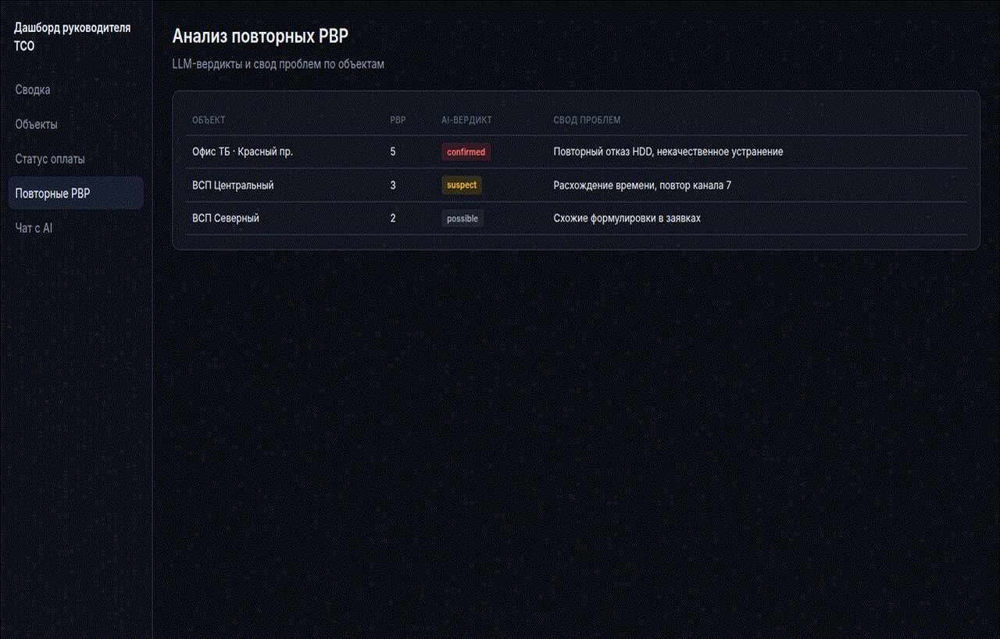
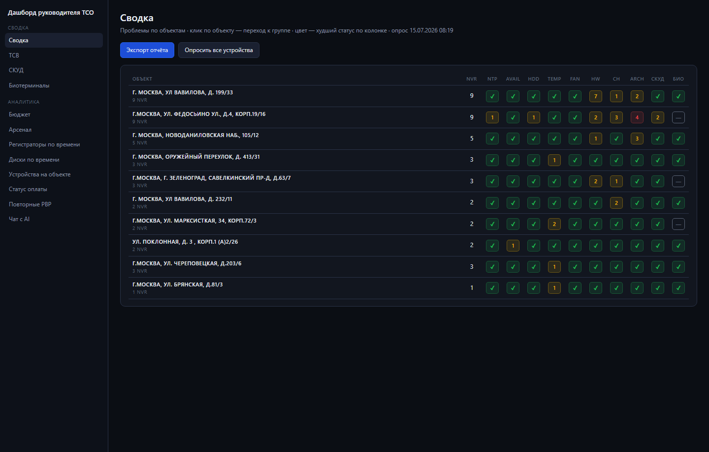
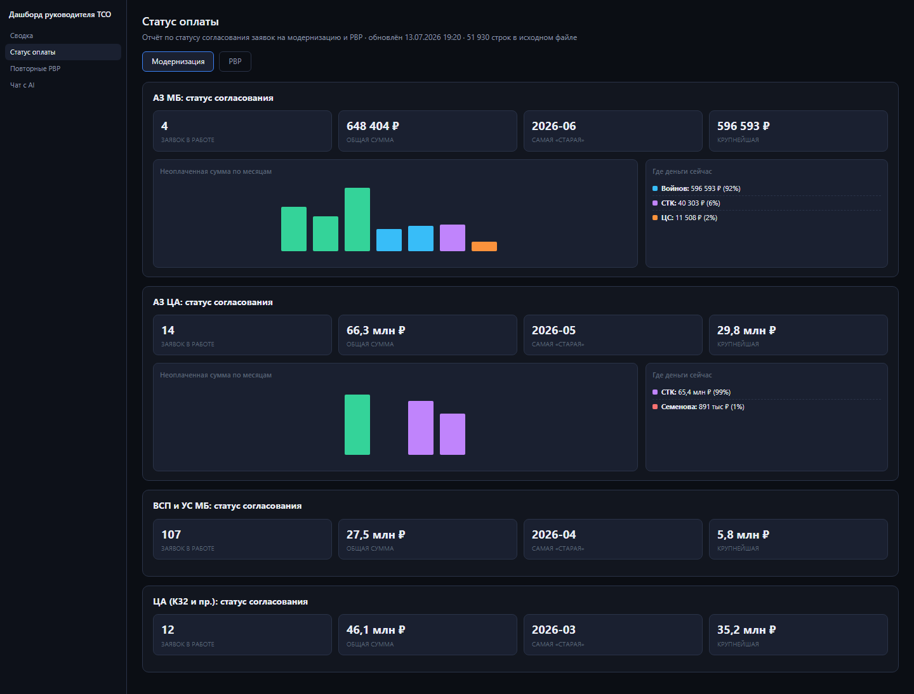
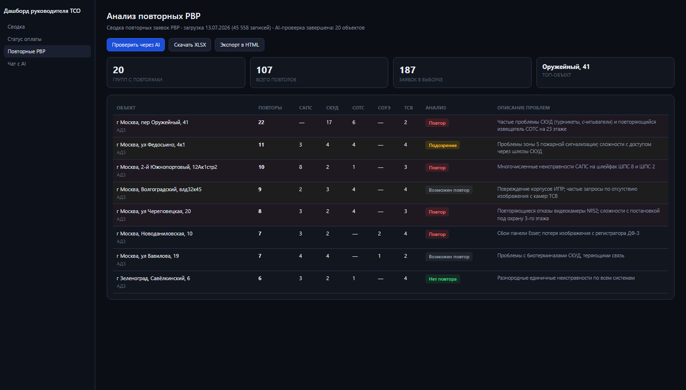
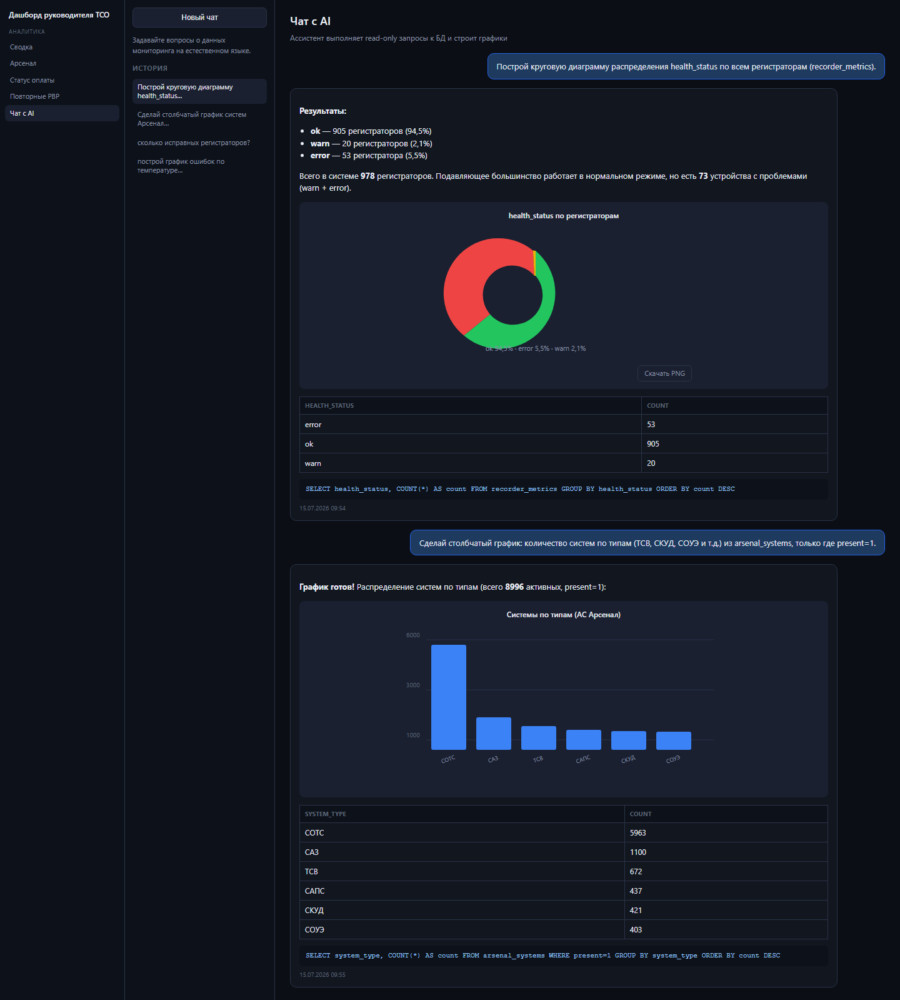
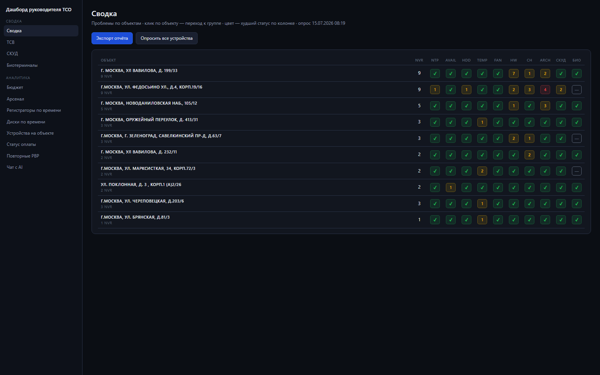

Диски, температура, время и архив
Отдельно и детально видно состояние всех жёстких дисков, температуру регистраторов, синхронизацию времени и текущую глубину архива.
Отклонения автоматически попадают в email-отчёт.
Единая платформа, которая на одном дашборде показывает состояние ТСВ, СКУД и биотерминалов, аккумулирует данные из пяти корпоративных систем и строит отчёты, отражающие реальное положение технических средств охраны на объектах и статус взаимодействия с СТК.

Платформа проактивного контроля исправности технических средств охраны — от видеонаблюдения и СКУД до биотерминалов и СОТС — с единым центром данных и управленческой отчётностью для руководителя ТСО.
Цель. Дать руководителю ТСО единую оперативную картину состояния систем безопасности на объектах банка — без ручной сборки отчётов из разрозненных источников.
Задачи:
«Раньше утро начиналось с пяти Excel-выгрузок. Сейчас открываю один дашборд — сразу вижу, где горит СКУД, где просел архив и какие объекты ждут оплаты СТК.»
— Руководитель отдела ТСО, территориальный банк
Руководитель ТСО ежедневно работает с пятью системами, каждая из которых хранит свою часть картины. Форматы отчётов не унифицированы, единого подхода к представлению данных нет.
Ручная сборка в Excel · нет единого светофора · повторные РВР постфактум
Один дашборд руководителя ТСО
Автоопрос · email-отчёт при отклонениях · LLM-анализ РВР
Платформа импортирует данные из пяти систем, нормализует их в единой базе данных и строит дашборды и отчёты, которые отражают реальное состояние ТСО и статус работ с подрядчиками.
Кликните по строке объекта
| Объект | ТСВ | Время | Диски | Темп. | Архив | СКУД | Био | |
|---|---|---|---|---|---|---|---|---|
| г. Москва, ул Вавилова, д. 199/33 | ✓ | ✓ | ✓ | ✓ | 7 | 2 | ✓ | ✓ |
| г.Москва, ул. Федосьино, д.4, корп.19/16 | 1 | ✓ | 1 | ✓ | 4 | 2 | 1 | 2 |
| г. Москва, Новоданиловская наб., 105/12 | ✓ | ✓ | ✓ | ✓ | 3 | ✓ | ✓ | ✓ |
| г. Москва, Оружейный переулок, д. 41 | ✓ | ✓ | ✓ | 1 | ✓ | ✓ | ✓ | ✓ |
| ул. Поклонная, д. 3, корп.1 (А) | 1 | ✓ | ✓ | ✓ | ✓ | ✓ | ✓ | ✓ |
Переключайте вкладки — скриншоты с реальных данных платформы (15.07.2026)




Отдельно и детально видно состояние всех жёстких дисков, температуру регистраторов, синхронизацию времени и текущую глубину архива.
Отклонения автоматически попадают в email-отчёт.
Данные из CMDB, затем опрос по API: что убрать из реестра и что добавить. Архитектура поддерживает Dahua, Hikvision, iFlow и др.

Встроен HTML-экспорт на данных июля 2026: 45 проблем (14 критичных), объекты Москвы, Федосьино с отказами архива и СКУД. При отклонениях такой отчёт уходит на почту автоматически.
LLM для анализа повторных РВР и чата с базой данных. Запросы к модели отправляются пакетами в JSON, ответы парсятся и включаются в отчёты.
LLM анализирует тексты заявок, присваивает вердикты и формирует свод проблем на объектах.
Вопросы на естественном языке → безопасные SQL (SELECT) → таблицы и графики ECharts.
15+ отчётов и дашбордов. Новые отчёты добавляются оперативно — достаточно импортировать данные из нужной АС.
Расчёт на масштабе парка 4000+ камер. Значения — заглушки для подстановки актуальных цифр региона.
ML на истории заявок ПП и Naumen.
Расширение мониторинга и выгрузок в единую базу.
Деградация изображения до жалоб.